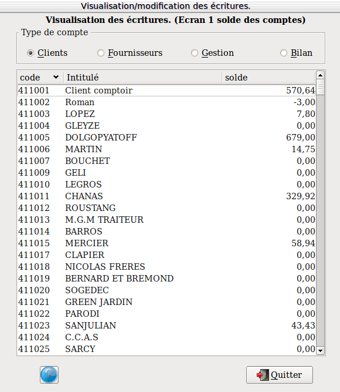

~ Comptabilité Laurux ~

~ Comptabilité Laurux ~ |
|
|
|

Nous voilà maintenant à l'origine de l'écriture telle qu'elle apparassait lors de la saisie du journal.
Si vous souhaitez modifier une ligne, sélectionnez-la en cliquant dessus. Vous vous retrouverez à ce moment là dans le journal d'origine de l'écriture.
Attention, vous ne pouvez pas modifier les lignes d'écritures cloturées.
Pour revenir aux niveaux précédents, cliquez sur "sortir".
----------------------------------------------------------------------------------------------------------------------